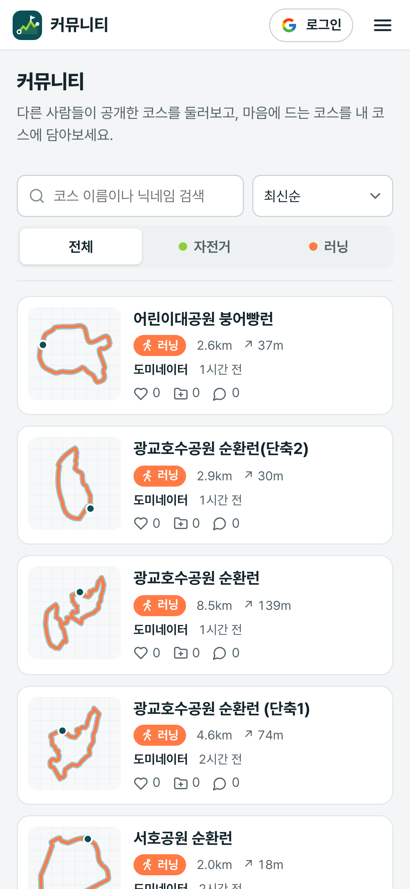
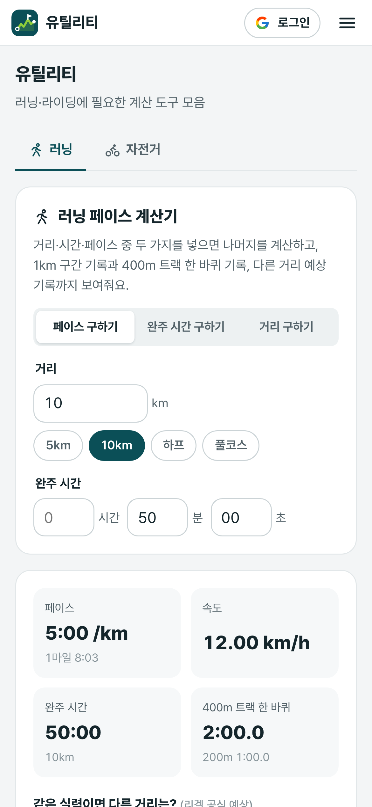

자전거 · 러닝 코스 플래너
자전거는 자전거길로, 러닝은 공원·산책로로.
큰 차도·계단·오르막 피하기도 켜고 끌 수 있어요.
거리·상승 고도·예상 시간을 바로 보여주고,
경사 구간은 색으로 나눠 보여줘요.
가민·와후·스트라바에 바로 넣고, 링크 하나로 공유해요.
받는 사람은 로그인 없이 볼 수 있어요.
다른 러너·라이더가 공개한 코스를 지도에서 보고, 마음에 들면 내 코스에 담아 바로 내려받아요.


설치 없이 브라우저에서 바로.
둘러보기·만들기·내려받기는 로그인도 필요 없어요.
프로필 링크에서 바로 열 수 있어요